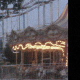

修车老高
注册：2005
帖子：193
帖子：193
春灯关门了，突然想到这个人。以前修摩托的时候见过他来两次，人不太会说话，问一句答半句。后来听说去外地干仓库，没再回来。
春灯关门了，突然想到这个人。以前修摩托的时候见过他来两次，人不太会说话，问一句答半句。后来听说去外地干仓库，没再回来。
当年大家骂得厉害，现在想想很多东西也没有定论。他给园里写过好几次维修单是真的，尤其那个门，说“小孩一推就开”，这句话我记得，因为后来有人把处罚和报修一起贴过。
我最烦现在又有人把他翻出来夸。他上班迟到是真的，跟主管吵到游客都在看也是真的，北门那边的人以前没少烦他。反正我那时候不喜欢他。至于小姑娘那晚到底怎么回事，我没在场，也不敢替谁下结论。
他有一次迟到快一个钟头，主管让他站仓库门口写说明，他还把纸揉了，说不想写。这个我亲眼见过，没什么好替他解释的。后来小孩失踪那晚他到底说过什么，我就不知道了。

陆婕我有点印象，我姐和她是一批进去的，04年7月招的游客服务岗。那会儿胸牌还是纸塑封，编号就印在名字下面。她后来一直做到园里关门前几年。
我翻到以前的客诉截图了，右下角签的是“KF017 / 陆婕”，编号有TS-060702、TS-060719、TS-060803。旧游客中心查询系统还有备份入口，域名早没了，但网页镜像能打开。想看完整记录就自己看，别只截标题。